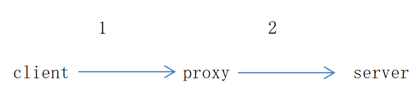
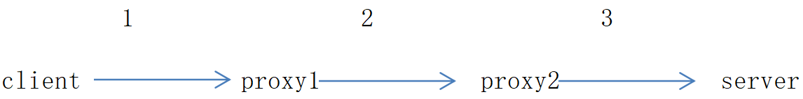
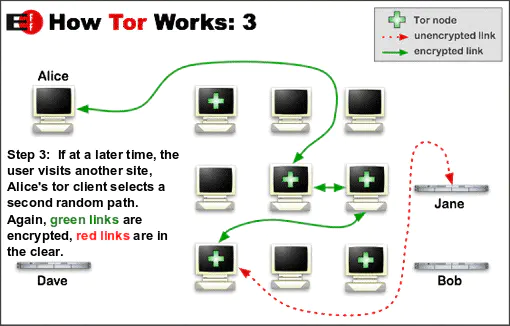
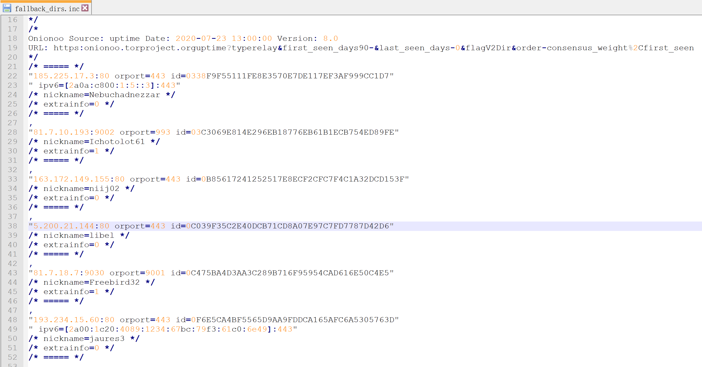
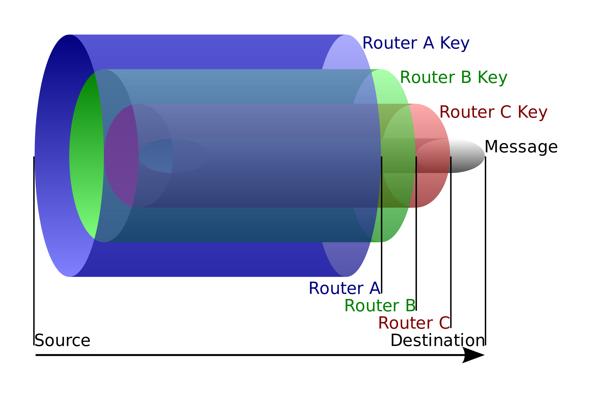
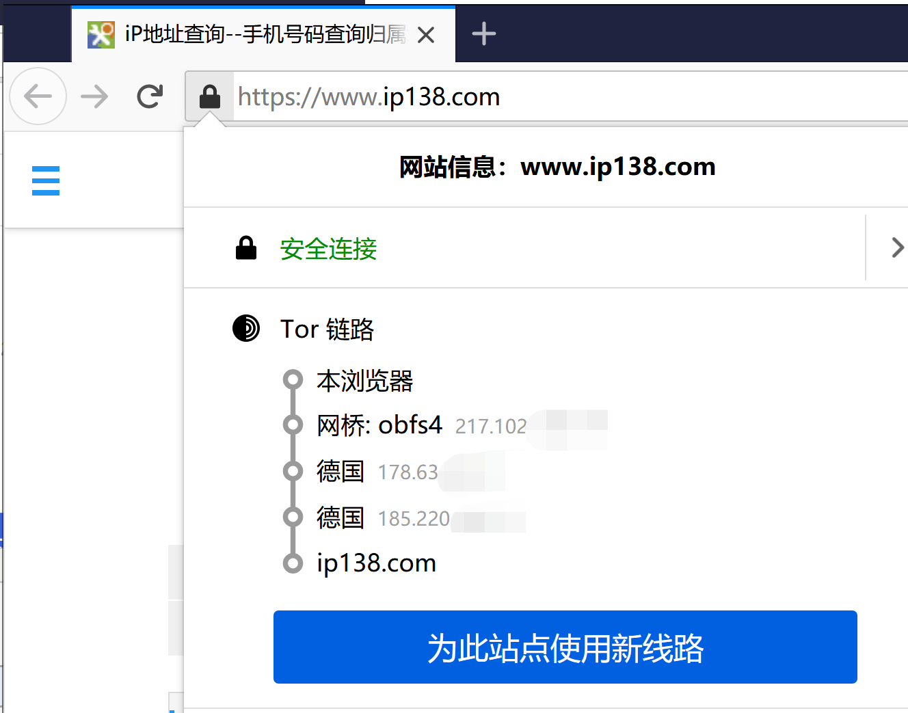
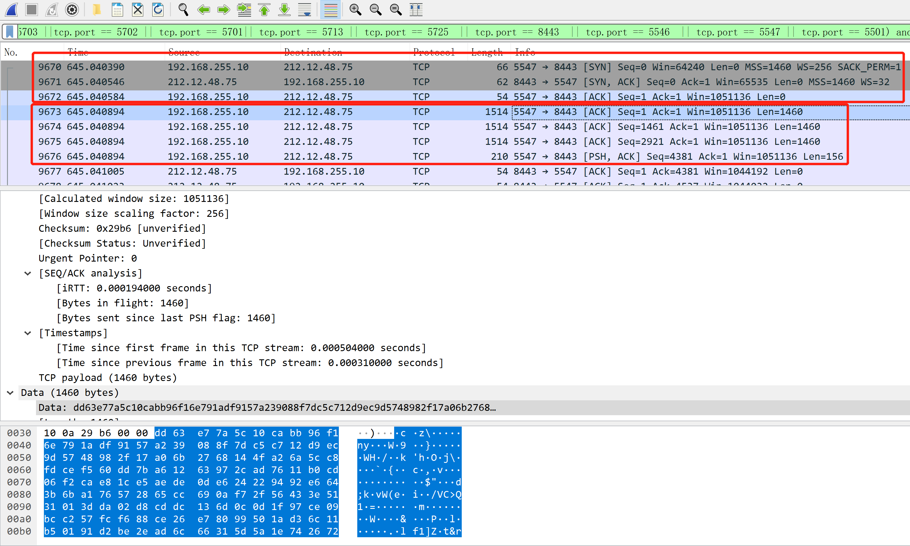
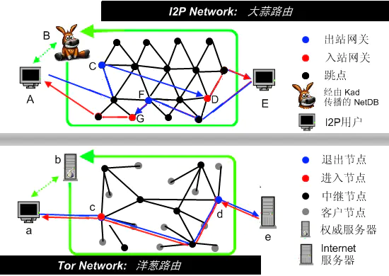

洋葱路由
…
简介
洋葱路由（英语：Onion routing）为一种在电脑网络上匿名沟通的技术。在洋葱路由的网络中，消息一层一层的加密包装成像洋葱一样的数据包，并经由一系列被称作洋葱路由器的网络节点发送，每经过一个洋葱路由器会将数据包的最外层解密，直至目的地时将最后一层解密，目的地因而能获得原始消息。而因为透过这一系列的加密包装，每一个网络节点（包含目的地）都只能知道上一个节点的位置，但无法知道整个发送路径以及原发送者的地址。
原理
用户都希望能隐藏自己的真实 ip 地址，让对方无法精准定位找到自己。此时可以找个代理服务器转发流量。最常见的方式就是代理，图示如下：

但是正常情况下，server 是有日志的，记录了 proxy 的 ip 地址（如果 server 在国内，运营商也有相应的记录）；同时国内的运营商也有 client 的访问记录。所以用这样的方式来隐藏真实 IP 是不可行的。增加到两个 proxy 节点

- client->proxy1：国内运营商知道 client 给 proxy1 发数据了
- proxy1->proxy2：由于两个节点都在海外，正常情况下，国内运营商是不知道这层代理关系的
- proxy2->server：正常情况下，server 有日志记录；如果 server 在国内，国内的运营商也有记录
- 关键的是 proxy1->proxy2：别人无法拿到这两个节点的数据，所以不好追查
- 既然两个 proxy 已经不好追查了，那么继续增加 proxy 节点到 3 个，如实现了匿名通信的自由软件 tor
简单的核心原理：
- 使用 tor 浏览器访问网页，除了走正常的 http/https 协议的流程外，tor 还需要先访问目录服务器，从目录服务器拿到中继服务器的地址和公钥（这是 tor 的致命问题之一：目录服务器的数量有限，一旦屏蔽目录服务器，tor 浏览器就用不了了）src/app/config/ 这里面存放了主备用目录服务器的 ip 地址、端口和 id

- 再通过中继服务器层层加密并转发流量。（使用非对称加密）
- 建立通信的过程
- 客户端与目录服务器建立链接，并从目录服务器中选取一个时延最低的服务器作为第一个中继服务器OR1；
- 客户端向OR1发送一个请求建链请求，OR1验证完客户端的合法性后生成一对密钥（公钥pubkey_OR1_Client、私钥prikey_OR1_Client）,然后将公钥pubkey_OR1_Client发回给客户端（至此，客户端成功的建立了其与OR1的通信链路）；
- 客户端又从目录服务器中选择一个时延最低的中继服务器OR2，并向OR1发送一个数据包：使用pubkey_OR1_Client加密OR2的地址；
- OR1收到数据包后使用prikey_OR1_Client解开数据包，发现是一个让其自身与另外一个服务器OR2建立链接的请求，那么OR1重复步骤2与OR2建立链接，并将OR2返回的OR1与OR2链路的公钥pubkey_OR1_OR2返回给客户端；
- 客户端重复步骤3、4，建立OR2与OR3之间的通信链路，并接收到OR2与OR3之间链路的公钥pubkey_OR2_OR3；
- 至此，客户端与3个中继服务器之间的链路/circuit已经成功建立，客户端拥有3把公钥：pubkey_Client_OR1、pubkey_OR1_OR2、pubkey_OR2_OR3。
- 通信链路建立了，接下来该发数据了：
- 客户端将要发送的数据（data）经过3层加密包裹：第一层：使用pubkey_OR2_OR3加密data：pubkey_OR2_OR3(data)；第二层：使用pubkey_OR1_OR2加密第一层加密后的数据：pubkey_OR1_OR2(pubkey_OR2_OR3(data))；*第三层：使用pubkey_Client_OR1加密第二层机密后的数据：
pubkey_Client_OR1(pubkey_OR1_OR2(pubkey_OR2_OR3(data)))； - OR1收到客户端发来的数据后使用其与Client链路的私钥prikey_Client_OR1解开数据包，发现数据包是发往OR2的，那么OR1就将解开后的数据包发送给OR2；
- OR2收到OR1发来的数据包重复OR1的步骤：将接收的数据包解开发往OR3；
- OR3收到数据包后，使用prikey_OR2_OR3解开数据包，这个时候的数据包是客户端要发往目的服务器的真实数据包data。此时，OR3就将data路由给目标服务器。
- 这就是洋葱名称的来源：数据被公钥层层加密发送。每个中继节点收到数据后都用自己保存的私钥层层解密，直到看到最终的目的数据包；

- 客户端将要发送的数据（data）经过3层加密包裹：第一层：使用pubkey_OR2_OR3加密data：pubkey_OR2_OR3(data)；第二层：使用pubkey_OR1_OR2加密第一层加密后的数据：pubkey_OR1_OR2(pubkey_OR2_OR3(data))；*第三层：使用pubkey_Client_OR1加密第二层机密后的数据：
缺点
- 并不是绝对的安全，因为最后一个节点和目的节点的链路是公开透明的。
- 长时间用同一条链路，也容易通过类似超级ping的工具猜出真实的ip地址，所以tor会不定时更换链路

比较明显的特征如下： - TCP前面3次握手后建立连接
- 然后发送4个数据包，每个包的格式、长度完全一样
这也是tor的弱点之一： 浏览器和osbf之间的通信格式是固定的，很容易通过机器学习的模型、甚至是人为预设的规则检测到。
大蒜路由I2P
tor是匿名通信的鼻祖，但还是有比较明显的缺陷：
（1）上面提到的目录服务器。一旦被防火墙ban，tor浏览器分分钟失效
（2）一旦建立通信连接，双方用这条线路互相传数据；使用时间稍微长一点的话，有一定的概率被猜到；
为了解决这些痛点，大蒜路由孕育而生！
I2P使用 Kad 算法（用过电驴或电骡的网友应该听说过）来获取网络节点的信息，将传输的原始数据拆散为加密数据包通过多条隧道交叉疏散传递，其优势如下：
- 不需要目录服务器，不用担心被防火墙“卡脖子”
- Kad算法拿到的节点信息只是整个 I2P 网络的一小部分
- 每一台运行 I2P 的主机都可以成为中继，帮别人转发数据（类似于 P2P 下载）。防火墙不太可能会将所有的I2P节点都加入黑名单ban掉！
- 上传与下载（也就是双方互相通信）的隧道相互独立而且两个方向上的隧道数量都可能>1；如下图所示：比如A到E走蓝色隧道，E到A走红色隧道，并且隧道还有可能不止1条，增加了追踪的难度！

参考：